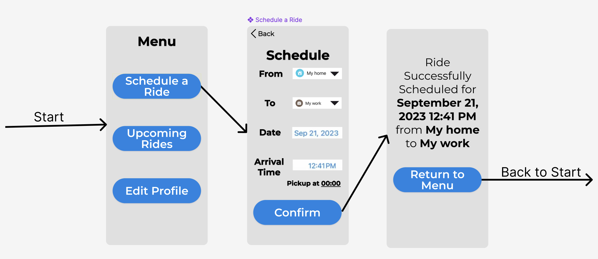
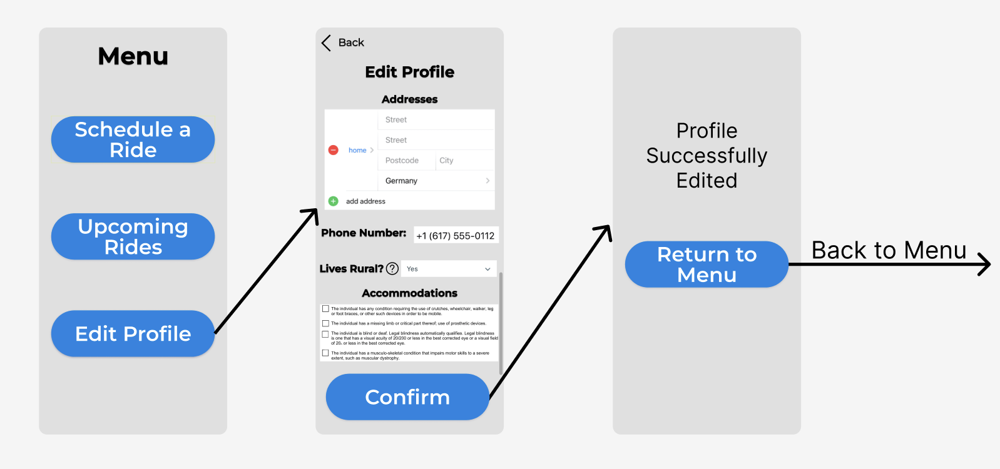
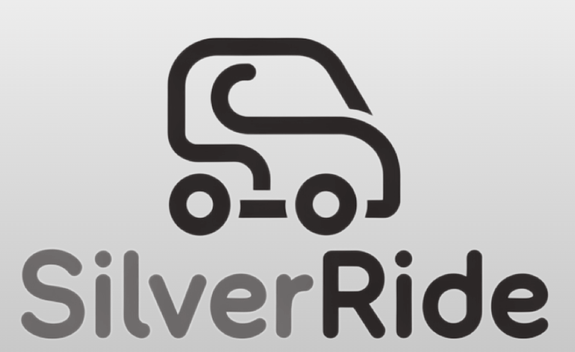

Final Prototype
Schedule a Ride:
In this task, we improved the design based on the heuristic evaluation and personal ambitions. First, we added a back button on screen two, allowing for users to not feel “trapped”. Next, we added error prevention by making the Date a date picker, Arrival Time a time picker, and From and To dropdowns of locations saved in the profile. Lastly, we changed buttons, fonts, and other style choices to reflect ios styling. This, we hope, gives the application a cleaner and more familiar look.
Edit Profile:
In this task, we improved the design based on the heuristic evaluation and personal ambitions. First, we added a back button on screen two, allowing for users to not feel “trapped”. Next, we made the Lives Rural? question more clear by adding a hint button. We also clarified the input of Accommodations by adding checkboxes. Lastly, we changed buttons, fonts, and other style choices to reflect ios styling. This, we hope, gives the application a cleaner and more familiar look.
Eddie ADD HERE
Eddie ADD HERE